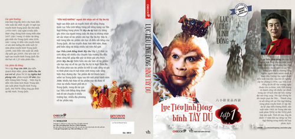

Lục Tiểu Linh Đồng Đến Đại Học Văn Hóa
(TGĐA Online) – Sáng nay tại Đại học Văn Hóa Hà Nội, Tề Thiên Đại Thánh Tôn Ngộ Không Lục Tiểu Linh Đồng đã có buổi giao lưu thú vị và cởi mở giữa ông và các sinh viên của trường.
Đối với khán giả Việt Nam, nhân vật Tôn Ngộ Không trong bộ phim truyền hình Trung Quốc Tây Du Ký do Lục Tiểu Linh Đồng thủ vai đã trở nên quen thuộc và gần gũi. Tôn Ngộ Không không chỉ trở thành một người bạn trong tâm tưởng của người hâm mộ điện ảnh mà còn là biểu tượng của văn hóa, sự kết nối truyền thống giữa hai nền văn hóa Việt – Trung.
Và ở góc độ nào đó hình ảnh Tôn Ngộ Không còn là bảo bối diệt trừ yêu ma, những điều xấu xa của con người… Nhân vật Tề Thiên Đại Thánh Tôn Ngộ Không quá thân quen trong những trang sách Tây Du Ký của tác giả Ngô Thừa Ân khi được chuyển thể thành tác phẩm truyền hình nó vẫn gây sức hấp dẫn lạ kì đối với công chúng yêu phim châu Á, trong đó có Việt Nam.
Nam diễn viên Lục Tiểu Linh Đồng nhờ diễn xuất xuất thần, nhập vai Tôn Ngộ Không quá ấn tượng mà đã trở thành một người nổi tiếng có sức ảnh hưởng lan rộng. Ông là thần tượng của nhiều người bởi tài năng diễn xuất và bởi hình ảnh Tôn Ngộ Không vô cùng sống động và ấn tượng.
Sang Việt Nam lần này, Lục Tiểu Linh Đồng sẽ dành nhiều thời gian để giao lưu với khán giả hâm mộ và những khách mời Việt Nam đặc biệt gắn liền với sự nghiệp của ông. Sáng nay tại Đại học Văn hóa, ông đã bày tỏ cảm xúc chân thành của mình khi bước đến Việt Nam. Ông nói ông yêu Việt Nam và mong muốn làm sứ giả văn hóa kết nối hai nước Việt – Trung.
Trong không khí vui vẻ, nhiệt tình của sinh viên, Lục Tiểu Linh Đồng đã trả lời những câu hỏi của các bạn sinh viên xung quanh vai diễn Tôn Ngộ Không và sự nghiệp của ông. Ông nói Tôn Ngộ Không là vai diễn thành công nhất trong sự nghiệp của ông. Lục Tiểu Linh Đồng cũng tiết lộ gia tộc ông bốn đời đóng vai Tôn Ngộ Không.
Ông dí dỏm: “Gia tộc tôi là nơi sản xuất Tôn Ngộ Không và tôi là người may mắn nhất khi hóa thân vai diễn này”. Ông chia sẻ những khó khăn khi đóng vai diễn này: “Để đóng được vai diễn Tôn Ngộ Không phải đòi hỏi có cơ sở, kĩ năng bài bản của sân khấu. Khi thể hiện vai diễn này, người diễn viên phải thể hiện được ba điều: con người, con vật và thần thánh”.

Để dẫn chứng lời mình nói, Lục Tiểu Linh Đồng không ngại biểu diễn lại các động tác của Tôn Ngộ Không trong phim Tây Du Ký. Ông khẳng định: “Tôi mãi mãi sắm vai Tôn Ngộ Không trai tráng và trẻ trung”. Điều ông nói hoàn toàn có cơ sở bởi nhìn ông ít ai tin rằng ông đã ngoài năm mươi tuổi.
Các fan của Tề thiên đại thánh tiếc nuối khi thần tượng ra về ...
Lịch trình hoạt động của Lục Tiểu Linh Đồng tại Việt Nam sẽ còn tiếp diễn trong những ngày kê tiếp. Các bạn có thể theo dõi liên tục những hình ảnh mới nhất về Tôn Ngộ Không Lục Tiểu Linh Đồng trên Thế giới Điện ảnh oline.